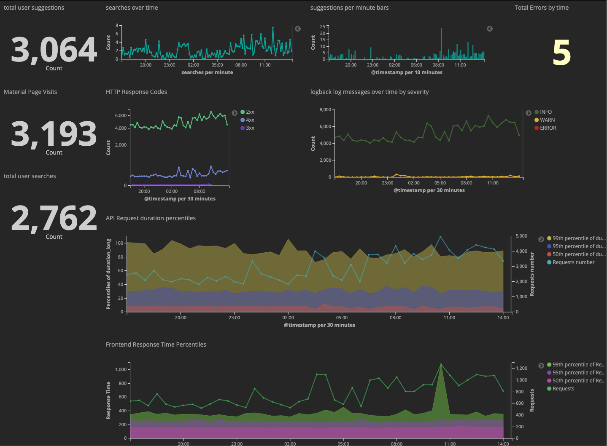
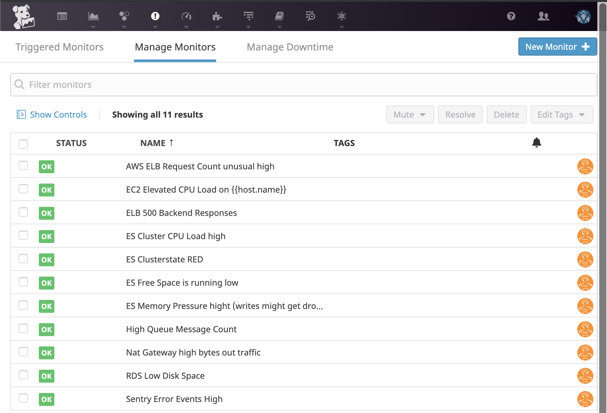
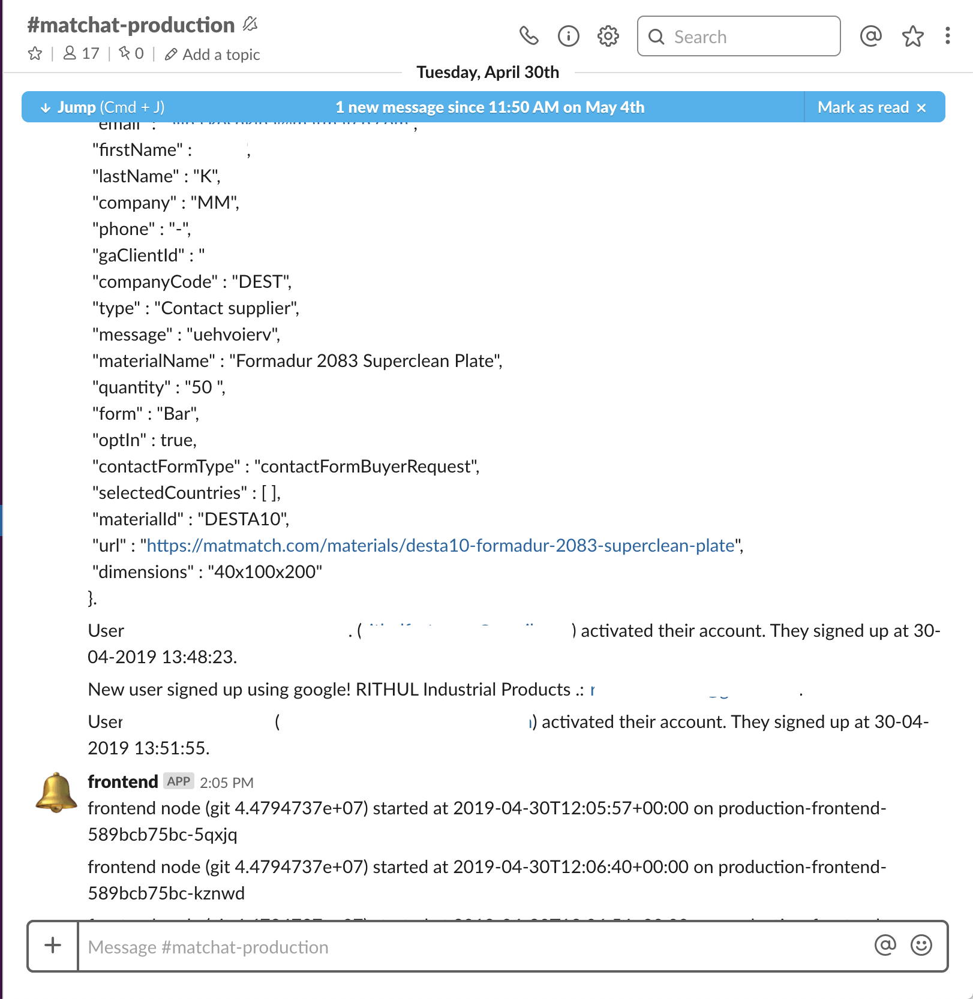

<!doctype html>
<html>
	<head>
		<meta charset="utf-8">
		<meta name="viewport" content="width=device-width, initial-scale=1.0, maximum-scale=1.0, user-scalable=no">

		<title>Ein Herz für Produktion</title>

		<link rel="stylesheet" href="css/reset.css">
		<link rel="stylesheet" href="css/reveal.css">
		<link rel="stylesheet" href="css/theme/moon.css">

		<!-- Theme used for syntax highlighting of code -->
		<link rel="stylesheet" href="lib/css/monokai.css">

		<!-- Printing and PDF exports -->
		<script>
			var link = document.createElement( 'link' );
			link.rel = 'stylesheet';
			link.type = 'text/css';
			link.href = window.location.search.match( /print-pdf/gi ) ? 'css/print/pdf.css' : 'css/print/paper.css';
			document.getElementsByTagName( 'head' )[0].appendChild( link );
		</script>
	</head>
	<body>

	<style type="text/css">
		/* 1. Style header/footer <div> so they are positioned as desired. */
		#footer-left {
			position: absolute;
			bottom: 1%;
			left: 1%;
		}
	</style>

	<!-- 2. Create hidden header/footer <div> -->
<!--	<div id="hidden" style="display:none;">-->
<!--		<div id="header">-->

<!--			<div id="footer-left">&nbsp;@chrisuhl</div>-->
<!--		</div>-->
<!--	</div>-->

	<div class="reveal">
			<div class="slides">

				<section data-markdown data-separator="^\n---\n$" data-separator-vertical="^\n--\n$">
					<script type="text/template">
						# Ein ❤️ für Produktion
						## You-build-it-you-run-it Soforthilfe für kleine Entwicklungsteams

						Christian Uhl

						--

						

						* Seit ~ 3 Jahren durchgehend "on call"
						* Kein OPS für 250.000 Monthly Active Users
						* Insgesamt wohl so 10 Minuten Downtime vom Matmatch.com
						* Immerhin kein permanenter Datenverlust


						--

						## Möglichkeiten DevOps falsch zu machen:

						1. alle OPS Menschen einfach DevOps nennen und nach Hause gehen.
						2. Einfach kein OPS haben, wird schon schiefgehen.

						--

						## Wir haben uns für Fehler zwei entschieden

						Wenn man kein Operations / Betrieb hat, dann muss man es wohl selber machen.

						Aber die meisten Entwickler*Innen wissen nicht wie so was geht.

						--

						## Wissen

						## &

						## Empathie

						---

						## Empathie

						--

						## Visualisiere dein System


						

						--

						### Täglicher Check In

						#### Cops of the Day

						Jeden Morgen arbeitet ein zufälliges Paar von Entwickler*Innen die Checkliste ab

						Sind alle Systeme okay? Was ist in den letzten 24 Stunden passiert? Wie sind die Fehlerbudgets?

						

						--

						### ChatOps

						Das System sollte regelmässig Lebenszeichen geben, damit mit immer mitbekommt dass es lebt und mehrwert bringt.

						Am besten eignen sich Geschäftsevents (Benutzer registriert sich, tut etwas bestimmtes, erreicht ein Ziel...)

						

						--

						### Sei on call

						> Nichts erinnert dich mehr an Qualität, wie wenn dich der Mangel an Qualität um 3 Uhr morgens anruft.

						


						---

						## Wissen

						In den meisten diveres Teams gibt es ein wenig Wissen wie man ein Produktionssystem am laufen hält. Die Kunst ist jetzt diese Wissen zu verteilen.


						--

						## Gemeinsam Troubleshooten

						* Wie Pair-Programming, nur mit mehr Adrenalin

						--

						## Blameless Post-Mortems

						* Beschreibung des Fehlers
						* Impact: Wer war betroffen, für wie lang? Welche Daten sind jetzt weg?
						* Beschreibung der "Stop the Bleeding" Aktion
						* Beschreibung "Vernünftiger" Fix
						* Am wichtigsten: Welche Prozessverbesserung braucht es, damit es nicht nochmal passieren kann?

						--

						## Infrastructure as Code

						mit Reviews!

						--

						## Holt euch Hilfe!

						* Ohne die Tipps von Freunden und Bekannten hätte ich das nicht geschafft
						* geht offen damit um was ihr nicht könnt
						* Redet miteinander / in euerem Netzwerk / geht auf Meetups
						* Im schlimmsten Fall gibts ja noch so Consulting-Firmen  ;-)


					</script>
				</section>


			</div>
		</div>

		<script src="js/reveal.js"></script>

		<script>
			// More info about config & dependencies:
			// - https://github.com/hakimel/reveal.js#configuration
			// - https://github.com/hakimel/reveal.js#dependencies
			Reveal.initialize({
				dependencies: [
					{ src: 'plugin/markdown/marked.js' },
					{ src: 'plugin/markdown/markdown.js' },
					{ src: 'plugin/notes/notes.js', async: true },
					{ src: 'plugin/highlight/highlight.js', async: true }
				]
			});
		</script>

	<script src="https://code.jquery.com/jquery-2.2.4.min.js"></script>
	<script type="text/javascript">
		// 3. On Reveal.js ready event, copy header/footer <div> into each `.slide-background` <div>
		var header = $('#header').html();
		if ( window.location.search.match( /print-pdf/gi ) ) {
			Reveal.addEventListener( 'ready', function( event ) {
				$('.slide-background').append(header);
			});
		}
		else {
			$('div.reveal').append(header);
		}
	</script>
	</body>
</html>
